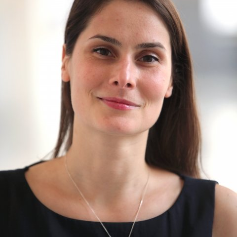

NetSec finance cinq types de subventions de réseautage pour soutenir la mobilité, la participation aux conférences et la collaboration virtuelle dans les études de sécurité européennes. Les appels sont ouverts à la communauté de recherche au sens large, et pas seulement aux participant·es de l'Action, voir l'éligibilité de chaque subvention pour plus de détails.
Les chercheur·euses en début de carrière pourraient aussi s'intéresser à l'École de formation NetSec, qui finance le voyage et le mentorat des doctorant·es en marge de la conférence.
Les candidatures passent par e-COST, connectez-vous et sélectionnez l'Action CA24154. Seules les cinq subventions ci-dessous sont financées par NetSec. Les autres dispositifs que vous pourriez voir sur le portail ne le sont pas, et seront rejetés en cas de candidature.
Types de subventions
Mobilité
Mission scientifique de courte durée (STSM)
Soutient une visite de travail dans une organisation hôte située dans un autre pays, pour des recherches spécifiques menées sur une période définie, collaboration, utilisation d'installations, création de nouveaux partenariats. L'hôte doit se trouver dans un pays différent de celui du·de la candidat·e.
Montant€ 2 100
ActivitéVisite en personnechez un hôte dans un autre pays
LieuPartoutdans le monde
Éligibilité
Ouvert à toute personne affiliée à un pays membre COST ou NNC, quel que soit le stade de carrière.
L'organisation hôte doit se trouver dans un pays différent de celui de l'affiliation du·de la candidat·e.
La visite soutient les objectifs de l'Action et le développement de carrière du·de la candidat·e.
Jusqu'à 50 % d'avance peut être libérée après l'attribution (STSM uniquement, les autres types paient en totalité après l'activité).
Si deux bénéficiaires STSM ou plus partagent le même hôte, ils·elles doivent soumettre des rapports scientifiques originaux (non identiques).
Vous cherchez un établissement d’accueil ? Filtrez l’annuaire par accueil STSM pour trouver les membres dont l’institution peut accueillir une visite.
Préparer la visite
Vous accueillez un·e visiteur·se ? Téléchargez le modèle de lettre d’invitation (en anglais) et adaptez-le sur le papier à en-tête de votre institution.
Les dates des collectes STSM en cours sont publiées sur e-COST.
L'équivalent virtuel d'une STSM, collaboration structurée avec une organisation hôte dans un autre pays, menée en ligne. Mêmes objectifs (partenariat de recherche, développement de carrière, réalisation des objectifs de l'Action), sans déplacement.
Montant€ 1 300
ActivitéCollaboration virtuelleavec un hôte dans un autre pays
LieuMonde entieren ligne, sans déplacement
Éligibilité
Ouvert à toute personne affiliée à un pays membre COST ou NNC.
Collaboration avec un hôte dans un pays différent de celui de l'affiliation du·de la candidat·e.
Le livrable bénéficie à la fois au·à la bénéficiaire et à l'Action.
Subvention de conférence pour jeunes chercheur·euses et innovateur·rices
Pour les jeunes chercheur·euses et innovateur·rices (moins de 40 ans au moment de la candidature) afin qu'ils·elles présentent leurs propres recherches, en présentation orale ou poster, lors d'une conférence relevant du périmètre de l'Action. Renforce la visibilité de la prochaine génération de chercheur·euses européen·nes en sécurité.
Montant€ 1 200
ActivitéOrale ou postervotre propre travail
LieuPartouten présentiel ou virtuel
Éligibilité
Participant·es de l'Action, de moins de 40 ans au moment de la candidature.
Accepté·e pour présenter (oralement ou poster) son propre travail dans le périmètre de l'Action.
Affilié·e à un pays participant.
Pas de chevauchement avec une autre subvention COST ou réunion pour la même activité.
Sur le portail e-COST, cette candidature n'apparaît qu'aux candidat·es de moins de 40 ans.
Subvention de conférence pour pays cibles d'inclusion
Soutient les chercheur·euses basé·es dans des pays cibles d'inclusion (ITC) pour présenter leurs propres travaux, dans le périmètre de l'Action, lors d'une conférence externe. L'objectif est d'élargir la participation géographique et d'aider les carrières individuelles au passage.
Montant€ 1 200
Disponibles4 subventionssur la durée de l'Action
ActivitéPrésentation oralede vos propres recherches
LieuPartouten présentiel ou virtuel
Éligibilité
Participant·es de l'Action affilié·es à des ITC ou pays voisins proches (NNC).
Accepté·e pour donner une présentation orale de votre propre travail, dans le périmètre de l'Action.
Pas de chevauchement avec une autre subvention COST ou réunion pour la même activité.
Sur le portail e-COST, cette candidature n'apparaît qu'aux candidat·es affilié·es à un ITC.
Soutient un·e participant·e de l'Action qui présente les résultats de l'Action (ses travaux, activités ou conclusions collectives) lors d'une conférence externe, pour renforcer la visibilité de NetSec, attirer de nouveaux·elles participant·es et diffuser les productions au domaine au sens large.
Montant€ 1 250
ActivitéPrésentation oraledes travaux de l'Action
LieuPartouten présentiel ou virtuel
Éligibilité
Participant·es de l'Action affilié·es à des pays membres COST ou pays voisins proches (NNC).
Accepté·e pour donner une présentation orale des travaux, résultats ou activités de l'Action (un poster ou vos propres recherches sans rapport ne sont pas éligibles, voir les subventions ITC / YRI ci-dessous).
Pas de chevauchement avec une autre subvention COST ou réunion pour la même activité (pas de double financement).
Chaque subvention suit le même processus e-COST, de la candidature au paiement. Les étapes 1 à 4 ont lieu avant l'activité. L'étape 5 est l'activité elle-même. Les étapes 6–7 se déroulent après.
Candidature Avant
Vous soumettez votre candidature via e-COSTavant le début de l'activité prévue. Les démarrages tardifs ne sont pas éligibles.
Évaluation Avant
Le·la Coordinateur·rice d'attribution et le Comité d'évaluation des subventions évaluent les candidatures selon les critères fixés par le Comité de gestion.
Approbation Avant
Le·la GAC approuve ou rejette la subvention dans e-COST. Les candidatures rejetées repassent au statut de brouillon, vous pouvez les modifier et les resoumettre.
Lettre d'attribution Avant
Le·la responsable du porteur de subvention émet la lettre d'attribution. Vous pouvez désormais procéder aux réservations (et, pour les STSM uniquement, demander jusqu'à 50 % d'avance).
— Fenêtre d'activité —
Activité Pendant
Vous réalisez la visite, la présentation, la collaboration virtuelle, etc., dans les dates et le périmètre approuvés.
Rapport Après
Au plus tard 30 jours après la fin, soumettez un rapport scientifique (et tout justificatif) via e-COST.
Paiement Après
Le·la GAC approuve le rapport. Le·la responsable du porteur de subvention libère le paiement (restant).
Bon à savoir
Trois règles qui surprennent le plus souvent les candidat·es.
Libre accès
Les publications et autres productions de recherche issues d'une subvention NetSec doivent être en libre accès, conformément à la politique de COST. Mentionnez l'Action COST CA24154 et utilisez la déclaration de financement COST + UE selon le guide d'identité visuelle.
Pas de double financement
Vous ne pouvez pas cumuler une subvention NetSec avec une autre subvention COST ou un remboursement de réunion pour la même activité. e-COST vous avertit des chevauchements au moment de la soumission.
Évitez les conflits d'intérêts
Une subvention peut être attribuée à tout·e participant·e de l'Action (y compris le·la président·e de l'Action ou le·la Coordinateur·rice d'attribution), mais le·la bénéficiaire ne doit pas participer à la décision concernant sa propre candidature.
Gestionnaires des subventions
Pour toute question d'éligibilité, de calendrier de candidature ou d'interprétation d'un appel spécifique, contactez les Coordinateur·rices d'attribution avant de soumettre.

Coordinateur·rice d'attribution des subventions
Dr Eliza Gheorghe
Bilkent University, Türkiye
Coordinateur·rice adjoint·e d'attribution
Dr Chiara Libiseller
King's College London, Royaume-Uni
Ressources & documents de référence
Tous les documents faisant foi sont hébergés par l'Association COST.